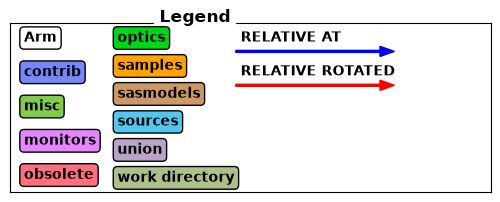
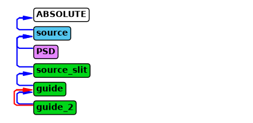

Instrument object#
This section shows the majority of the features implemented for the instrument object in McStasScript.
Initialization#
An instrument object is created with the McStas_instr or McXtrace_instr class. When an instrument object is created the only required argument is the name of the instrument which will be used for the instrument filename. There are however a number of keyword arguments that can be used to provide more information and alter the behavior.
Keyword argument |
Type |
Default |
Description |
|---|---|---|---|
author |
str |
“Python Instrument Generator” |
Name that will appear as author in instrument files |
origin |
str |
“ESS DMSC” |
String that will appear as origin in instrument files |
input_path |
str |
“.” |
Folder which is considered workspace for McStas / McXtrace |
output_path |
str |
instrument_name |
Name of data folder written by simulation |
package_path |
str |
Can be set to manually specify location of McStas/McXtrace installation |
|
executable_path |
str |
Can be set to manually specify location of mcrun/mxrun executable |
|
ncount |
int, float |
1E6 |
Sets the ncount used for simulations |
mpi |
int |
Sets the number of MPI threads used for simulations |
|
force_compile |
bool |
True |
Whether to force compilation before each run or not |
parameters |
ParameterContainer |
Set of parameters for initialized instrument |
import mcstasscript as ms
instrument = ms.McStas_instr("instr_name", author="Mads Bertelsen", origin="DMSC")
instrument_w_settings = ms.McStas_instr("instr_name", ncount=3E6, output_path="new_folder")
Using settings method#
The instrument object has a setting method which can update some settings after initialization. The current settings can always be viewed with show_settings.
Keyword argument |
Type |
Default |
Description |
|---|---|---|---|
output_path |
str |
instrument_name |
Name of data folder written by simulation |
package_path |
str |
Can be set to manually specify location of McStas/McXtrace installation |
|
executable_path |
str |
Can be set to manually specify location of mcrun/mxrun executable |
|
ncount |
int, float |
1E6 |
Sets the ncount used for simulations |
mpi |
int |
Sets the number of MPI threads used for simulations |
|
seed |
Sets the seed of the simulation |
||
force_compile |
bool |
True |
Whether to force compilation before each run or not |
custom_flags |
str |
String with custom flags for mcrun/mxrun command |
instrument.show_settings()
instrument_w_settings.show_settings()
Instrument settings:
output_path: instr_name
run_path: .
package_path: /home/runner/micromamba/envs/mcstasscript-docs/share/mcstas/resources
executable_path: /home/runner/micromamba/envs/mcstasscript-docs/bin
executable: mcrun
force_compile: True
NeXus: False
save_comp_pars: False
Instrument settings:
ncount: 3.00e+06
output_path: new_folder
run_path: .
package_path: /home/runner/micromamba/envs/mcstasscript-docs/share/mcstas/resources
executable_path: /home/runner/micromamba/envs/mcstasscript-docs/bin
executable: mcrun
force_compile: True
NeXus: False
save_comp_pars: False
instrument.settings(mpi=2, seed=300)
instrument.show_settings()
Instrument settings:
mpi: 2
seed: 300
output_path: instr_name
run_path: .
package_path: /home/runner/micromamba/envs/mcstasscript-docs/share/mcstas/resources
executable_path: /home/runner/micromamba/envs/mcstasscript-docs/bin
executable: mcrun
force_compile: True
NeXus: False
save_comp_pars: False
Parameters#
Instrument parameters can be added with add_parameters which returns a parameter object.
wavelength = instrument.add_parameter("wavelength", comment="Wavelength in AA")
print(wavelength)
wavelength.value = 5
print(wavelength)
Parameter named: 'wavelength' without set value.
[dimensionless]
Wavelength in AA
Parameter named: 'wavelength' with value: 5
[dimensionless]
Wavelength in AA
Searching for components and data#
McStas have a few keywords for adjusting where to search for data and components. This is typically added right after the parameters, so its natural to include it here in the documentation of the instrument object.
Dependency#
The DEPENDENCY keyword allows McStas to search for data and software at runtime. There is just one dependency line for an instrument.
instrument.set_dependency("/dependency/example")
As the instrument won’t run unless the dependency is set to a valid path, let’s reset it.
instrument.set_dependency("")
Search#
The SEARCH keyword allows McStas to search for components before McStas code generation. There can be multiple SEARCH statements in an instrument. It is possible to enable SHELL processing so a system command can be given that should return a path. McStasScript has yet to implement this features fully, so McStasScript won’t find components in search paths. For now it can only be used to overwrite existing components with identical input parameters.
instrument.add_search("/search/example")
instrument.add_search("pwd", SHELL=True)
instrument.show_search()
Did not find specified folder: /search/example
Did not find specified folder: pwd
List of SEARCH statements:
SEARCH "/search/example"
SEARCH SHELL "pwd"
It is possible to clear all search statements from an instrument with the clear_search method.
instrument.clear_search()
instrument.show_search()
No Search statements yet
Initialize section#
One of the great advantages for the McStas / McXtrace packages is the initialize section of the instrument where calculations can be performed before the ray-tracing simulation starts. One could for example calculate appropriate angles to reach a certain Bragg peak at a given wavelength. This would involve defining some declare variables, using these in the initialize section and then assigning them as component inputs.
In McStasScript many calculations can be performed directly in Python, and so typically the initialize section is used less, but it is still useful and available through McStasScript.
The instrument object has the method append_initialize which adds a line of code to the initialize. This line is copied directly into the instrument file, so it follows C syntax. Remember the semicolon! In addition there is add_declare_var to specify the declared variables needed. When declare variables are defined an object is returned which can be used when referring to that variable.
wavenumber = instrument.add_declare_var("double", "wavenumber")
instrument.append_initialize("wavenumber = 2*PI/wavelength;")
print(instrument.initialize_section)
// Start of initialize for generated instr_name
wavenumber = 2*PI/wavelength;
Finally section#
The finally section works exactly as the initialize section, but is executed after the ray-tracing simulation. Add a line to it with append_finally.
instrument.append_finally('printf(\"Thanks for using McStasScript!\\n\");')
print(instrument.finally_section)
// Start of finally for generated instr_name
printf("Thanks for using McStasScript!\n");
Help features#
There are a few methods built into the instrument class that helps the user, these are:
available_components
component_help
available_components#
The available_components method shows the component categories, and if called with the name of a category, will show all available components in the specified category. The categories can include the work directory if any components are located there.
instrument.available_components()
Here are the available component categories:
contrib
misc
monitors
obsolete
optics
samples
sasmodels
sources
union
Call available_components(category_name) to display
instrument.available_components("optics")
Here are all components in the optics category.
Absorber Guide_channeled Pol_FieldBox
Arm Guide_gravity Pol_SF_ideal
Beamstop Guide_simple Pol_bender
Bender Guide_tapering Pol_constBfield
Collimator_linear Guide_wavy Pol_guide_mirror
Collimator_radial He3_cell Pol_guide_vmirror
Derotator Mask Pol_mirror
Diaphragm Mirror Pol_tabled_field
DiskChopper Monochromator_curved Refractor
Elliptic_guide_gravity Monochromator_flat Rotator
FZP_simple Monochromator_pol Selector
FermiChopper Place Set_pol
Filter_gen PolAnalyser_ideal Slit
Guide Pol_Bfield V_selector
Guide_anyshape Pol_Bfield_stop Vitess_ChopperFermi
component_help#
The component_help method can show the parameters of any component the instrument object knows about, although not necessarily used in the instrument.
instrument.component_help("Guide")
___ Help Guide _____________________________________________________________________
|optional parameter|required parameter|default value|user specified value|
reflect = 0 [str] // Reflectivity file name. Format <q(Angs-1) R(0-1)>
w1 [m] // Width at the guide entry
h1 [m] // Height at the guide entry
w2 = 0.0 [m] // Width at the guide exit
h2 = 0.0 [m] // Height at the guide exit
l [m] // length of guide
R0 = 0.99 [1] // Low-angle reflectivity
Qc = 0.0219 [AA^-1] // Critical scattering vector
alpha = 6.07 [AA] // Slope of reflectivity
m = 2.0 [1] // m-value of material. Zero means completely absorbing. glass/SiO2
Si Ni Ni58 supermirror Be Diamond m= 0.65 0.47 1 1.18 2-6 1.01 1.12
W = 0.003 [AA^-1] // Width of supermirror cut-off
-------------------------------------------------------------------------------------
Adding components#
One adds components to the instrument using add_component which takes the name of the component instance for the instrument, followed by the name of the component in the library. When adding a component, a component object is returned, and how these can be manipulated is discussed on the component object page. Notice that it is not allowed to add two components with the same instance name, meaning rerunning this cell would raise an exception.
source = instrument.add_component("source", "Source_div")
source.set_parameters(xwidth=0.1, yheight=0.1, focus_aw=3.0, focus_ah=2.0,
lambda0=wavelength, dlambda="0.1*wavelength")
print(source)
COMPONENT source = Source_div(
xwidth = 0.1, // [m]
yheight = 0.1, // [m]
focus_aw = 3.0, // [deg]
focus_ah = 2.0, // [deg]
lambda0 = wavelength, // [AA]
dlambda = 0.1*wavelength // [AA]
)
AT (0, 0, 0) ABSOLUTE
instrument.show_components()
source Source_div AT (0, 0, 0) ABSOLUTE
There are a number of keyword arguments allowed when adding a component. These will mainly be discussed on the component object page, but a few are relevant for the instrument, because they handle in what order components are sequenced in the instrument. To illustrate this we add a slit and a guide to the instrument at reasonable positions. Notice these new components are added at the end of the instrument.
slit = instrument.add_component("source_slit", "Slit", AT=2, RELATIVE=source)
slit.set_parameters(xwidth=0.015, yheight=0.015)
guide = instrument.add_component("guide", "Guide", AT=0.1, RELATIVE=slit)
guide.set_parameters(w1=0.03, h1=0.03, l=10.0)
instrument.show_components()
source Source_div AT (0, 0, 0) ABSOLUTE
source_slit Slit AT (0, 0, 2) RELATIVE source
guide Guide AT (0, 0, 0.1) RELATIVE source_slit
The order of components is important in a McStas/McXtrace simulation as each will affect the ray state in the sequence shown with print_components. If one wants to add a component between the source and the slit, this can be done with the before or after keyword.
monitor = instrument.add_component("PSD", "PSD_monitor", after="source")
monitor.set_AT(1.9, RELATIVE=source)
monitor.set_parameters(xwidth=0.1, yheight=0.1, filename='"PSD.dat"')
instrument.show_components()
source Source_div AT (0, 0, 0) ABSOLUTE
PSD PSD_monitor AT (0, 0, 1.9) RELATIVE source
source_slit Slit AT (0, 0, 2) RELATIVE source
guide Guide AT (0, 0, 0.1) RELATIVE source_slit
The PSD monitor was inserted after the source, this could also be accomplished with the before keyword argument.
before="source_slit"
It is important to note that the McStas instrument file is read sequentially, so the position of the PSD monitor can not be relative to a later component, but must only refer to earlier components. At this point in development it is not possible to reorder components in the instrument object.
Moving a component#
It is also possible to move a component in the component sequence of the instrument. Lets add a Lmonitor at the end at move it to the PSD. The move_component command takes a name or component object to be moved, and then the same before and after keywords as add_component.
Lmon = instrument.add_component("Lmon", "L_monitor", RELATIVE="guide")
instrument.show_components()
source Source_div AT (0, 0, 0) ABSOLUTE
PSD PSD_monitor AT (0, 0, 1.9) RELATIVE source
source_slit Slit AT (0, 0, 2) RELATIVE source
guide Guide AT (0, 0, 0.1) RELATIVE source_slit
Lmon L_monitor AT (0, 0, 0) RELATIVE guide
instrument.move_component(Lmon, after=source)
instrument.show_components()
Moving the component 'Lmon' introduced errors in the instrument, run check_for_errors() for more information.
source Source_div AT (0, 0, 0) ABSOLUTE
Lmon L_monitor AT (0, 0, 0) RELATIVE guide
PSD PSD_monitor AT (0, 0, 1.9) RELATIVE source
source_slit Slit AT (0, 0, 2) RELATIVE source
guide Guide AT (0, 0, 0.1) RELATIVE source_slit
It is easy to introduce a mistake in an instrument by moving a component, as components uses each other as references for position and rotation. In the above example the Lmon was placed relative to the guide component, and thus McStasScript warns that an error was introduced when the component was moved, as guide has not been defined at the new position of Lmon. The method check_for_errors can be called for further information, here in a try block to catch the exception.
try:
instrument.check_for_errors()
except Exception as e:
print(str(e))
Component 'Lmon' referenced unknown component named 'guide'.
This check can be skipped with settings(checks=False)
Removing a component#
Components can be removed with the remove_component method. The input can be either a component name or a component object.
instrument.remove_component(Lmon)
instrument.show_components()
source Source_div AT (0, 0, 0) ABSOLUTE
PSD PSD_monitor AT (0, 0, 1.9) RELATIVE source
source_slit Slit AT (0, 0, 2) RELATIVE source
guide Guide AT (0, 0, 0.1) RELATIVE source_slit
Making a component copy#
It is possible to copy an existing component using the copy_component method. This can reduce both the amount of typing necessary, but also the risk of making a mistake. Here the guide is copied and placed a bit after the end of the first guide, with a small rotation.
guide2 = instrument.copy_component("guide_2", "guide")
guide2.set_AT(guide.l + 0.01, RELATIVE=guide)
guide2.set_ROTATED([0, 0.5, 0], RELATIVE=guide)
print(guide2)
COMPONENT guide_2 = Guide(
w1 = 0.03, // [m]
h1 = 0.03, // [m]
l = 10.0 // [m]
)
AT (0, 0, 10.01) RELATIVE guide
ROTATED (0, 0.5, 0) RELATIVE guide
Getting components#
It is always possible to retrieve the component objects corresponding to components in the instrument with the get_component and get_last_component methods.
my_source = instrument.get_component("source")
print(my_source)
COMPONENT source = Source_div(
xwidth = 0.1, // [m]
yheight = 0.1, // [m]
focus_aw = 3.0, // [deg]
focus_ah = 2.0, // [deg]
lambda0 = wavelength, // [AA]
dlambda = 0.1*wavelength // [AA]
)
AT (0, 0, 0) ABSOLUTE
last_component = instrument.get_last_component()
print(last_component)
COMPONENT guide_2 = Guide(
w1 = 0.03, // [m]
h1 = 0.03, // [m]
l = 10.0 // [m]
)
AT (0, 0, 10.01) RELATIVE guide
ROTATED (0, 0.5, 0) RELATIVE guide
Instrument diagram#
McStasScript can generate a diagram of an instrument file to aid the user in understanding its content. Use the show_diagram method to display the figure. The legend shows how the different component categories are represented with different colors, and how AT and ROTATED is represented with arrows. The rest of the figure is the actual diagram of this instrument, showing the sequence of components.
If in a notebook and using the %matplotlib widget backend, hovering the mouse over the left side of the boxes show further information on the individual components.
The diagram will also show use of the keywords EXTEND, WHEN, JUMP and GROUP, as well as connections between Union components, though none of these are present in this diagram.
instrument.show_diagram()


Run the simulation#
The simulation is executed with a call to the backengine method, which will return the generated data. If the simulation fails, the method returns None. McStasScript does check for some common mistakes before attempting to run the McStas simulation, if any problem is found a useful error message will be shown.
data = instrument.backengine()
---- Found 1 places in McStas output with keyword 'error'.
[runnervmtr4k5:07251] Set MCA parameter "orte_base_help_aggregate" to 0 to see all help / error messages
INFO: Placing instr file copy instr_name.instr in dataset /home/runner/work/McStasScript/McStasScript/docs/source/user_guide/instr_name
INFO: Placing generated c-code copy instr_name.c in dataset /home/runner/work/McStasScript/McStasScript/docs/source/user_guide/instr_name
----------------------------------------------------------------------
INFO: Using directory: "/home/runner/work/McStasScript/McStasScript/docs/source/user_guide/instr_name"
INFO: Regenerating c-file: instr_name.c
CFLAGS=
-----------------------------------------------------------
Generating single GPU kernel or single CPU section layout:
-----------------------------------------------------------
Generating GPU/CPU -DFUNNEL layout:
-----------------------------------------------------------
INFO: Recompiling: ./instr_name.out
INFO: ===
--------------------------------------------------------------------------
WARNING: Linux kernel CMA support was requested via the
btl_vader_single_copy_mechanism MCA variable, but CMA support is
not available due to restrictive ptrace settings.
The vader shared memory BTL will fall back on another single-copy
mechanism if one is available. This may result in lower performance.
Local host: runnervmtr4k5
--------------------------------------------------------------------------
Simulation 'instr_name' (instr_name.instr): running on 2 nodes (master is 'runnervmtr4k5', MPI version 3.1).
*** TRACE end ***
Detector: PSD_I=0.114562 PSD_ERR=0.000144698 PSD_N=626841 "PSD.dat"
Thanks for using McStasScript!
Thanks for using McStasScript!
[runnervmtr4k5:07251] 1 more process has sent help message help-btl-vader.txt / cma-permission-denied
[runnervmtr4k5:07251] Set MCA parameter "orte_base_help_aggregate" to 0 to see all help / error messages
INFO: Placing instr file copy instr_name.instr in dataset /home/runner/work/McStasScript/McStasScript/docs/source/user_guide/instr_name
INFO: Placing generated c-code copy instr_name.c in dataset /home/runner/work/McStasScript/McStasScript/docs/source/user_guide/instr_name
print(data)
[
McStasData: PSD type: 2D I:0.114562 E:0.000144698 N:626841.0]
Visualizing the instrument#
It is possible to visualize the instrument using the visualization features in McStas / McXtrace. This is done using the show_instrument method that shows the instrument with the currently set parameters. The method accepts a backend keyword:
Backend |
Description |
|
|---|---|---|
pythreejs |
Interactive 3D widget in a notebook |
|
webgl-classic |
Static 3D view in a notebook or browser |
(default) |
matplotlib / matplotlib_2d |
Python-rendered 3D / 2D view |
|
webgl |
3D view in a browser tab |
|
window |
2D view in a native window |
The default webgl-classic backend provides a static 3D view in a notebook or browser. The optional pythreejs backend provides an interactive notebook widget; install its dependencies with pip install McStasScript[geometry-viewer]. The guess keyword enables parameter-based geometry guessing; set verbose to True to print diagnostics from that branch.
When using an interactive 3D view, use these controls to manipulate the view:
Action |
Effect on view |
|---|---|
Hold left click and drag |
Rotate |
Hold right click and drag |
Move |
Hold mouse wheel and drag up/down |
Zoom in/out |
instrument.show_instrument(backend="pythreejs")
The window format is a 2D view which is opened in a new window, and may not always work if one use McStasScript through the cloud or a docker container. It is better suited for getting measurements and ensuring the geometry is exactly as desired.
#instrument.show_instrument(format="window")
Showing instrument file#
McStasScript writes the instrument file for McStas in the process of running or visualizing the instrument. The file can be shown with the show_instrument_file method.
instrument.show_instrument_file(line_numbers=True)
1 | /********************************************************************************
2 | *
3 | * McStas, neutron ray-tracing package
4 | * Copyright (C) 1997-2008, All rights reserved
5 | * Risoe National Laboratory, Roskilde, Denmark
6 | * Institut Laue Langevin, Grenoble, France
7 | *
8 | * This file was written by McStasScript, which is a
9 | * python based McStas instrument generator written by
10 | * Mads Bertelsen in 2019 while employed at the
11 | * European Spallation Source Data Management and
12 | * Software Centre
13 | *
14 | * Instrument: instr_name
15 | *
16 | * %Identification
17 | * Written by: Mads Bertelsen
18 | * Date: 08:47:47 on September 25, 2026
19 | * Origin: DMSC
20 | * %INSTRUMENT_SITE: Generated_instruments
21 | *
22 | * !!Please write a short instrument description (1 line) here!!
23 | *
24 | * %Description
25 | * Please write a longer instrument description here!
26 | *
27 | *
28 | * %Parameters
29 | * wavelength: [unit] Wavelength in AA
30 | *
31 | * %Link
32 | *
33 | * %End
34 | ********************************************************************************/
35 |
36 | DEFINE INSTRUMENT instr_name (
37 | wavelength = 5 // Wavelength in AA
38 | )
39 |
40 | DECLARE
41 | %{
42 | double wavenumber;
43 | %}
44 |
45 | INITIALIZE
46 | %{
47 | // Start of initialize for generated instr_name
48 | wavenumber = 2*PI/wavelength;
49 | %}
50 |
51 | TRACE
52 | COMPONENT source = Source_div(
53 | xwidth = 0.1, yheight = 0.1,
54 | focus_aw = 3.0, focus_ah = 2.0,
55 | lambda0 = wavelength, dlambda = 0.1*wavelength)
56 | AT (0, 0, 0) ABSOLUTE
57 |
58 | COMPONENT PSD = PSD_monitor(
59 | filename = "PSD.dat", xwidth = 0.1,
60 | yheight = 0.1)
61 | AT (0, 0, 1.9) RELATIVE source
62 |
63 | COMPONENT source_slit = Slit(
64 | xwidth = 0.015, yheight = 0.015)
65 | AT (0, 0, 2) RELATIVE source
66 |
67 | COMPONENT guide = Guide(
68 | w1 = 0.03, h1 = 0.03,
69 | l = 10.0)
70 | AT (0, 0, 0.1) RELATIVE source_slit
71 |
72 | COMPONENT guide_2 = Guide(
73 | w1 = 0.03, h1 = 0.03,
74 | l = 10.0)
75 | AT (0, 0, 10.01) RELATIVE guide
76 | ROTATED (0, 0.5, 0) RELATIVE guide
77 |
78 | FINALLY
79 | %{
80 | // Start of finally for generated instr_name
81 | printf("Thanks for using McStasScript!\n");
82 | %}
83 |
84 | END
85 |
Adding instrument tests#
McStasScript can add McStas %Example test entries to the instrument header with add_test. These entries record parameter values and the expected total intensity for a named monitor, so they can be checked later with the McStas mctest tool. For example, the generated structure is * %Example: wavelength=2 Detector: PSD_I=1.16e10. The intensity keyword is optional, if ommited a simulation will be executed with the current settings/parameters, and the intensity recorded on the desired monitor will be used. The current parameters are used, and an error will occur if one does not have a value. Its possible to only include some parameters using the included_pars keyword argument.
instrument.set_parameters(wavelength=2)
instrument.add_test("PSD", intensity=1.16e10)
instrument.add_test("PSD", intensity=1.15e10, included_pars=["wavelength"])
The current tests can be shown with show_tests, and a test can be removed with remove_test using the index given in show_tests.
instrument.show_tests()
instrument.remove_test(0)
0: %Example: wavelength=2 Detector: PSD_I=11600000000.0
1: %Example: wavelength=2 Detector: PSD_I=11500000000.0
Dump and load an instrument object#
It is possible to save an instrument object to disk and load it later.
instrument.dump("dump_file_name.dmp")
'dump_file_name.dmp'
To load an instrument object from a file, use the from_dump method that takes the filename.
loaded_instrument = ms.McStas_instr.from_dump("dump_file_name.dmp")
loaded_instrument.show_components()
loaded_instrument.show_settings()
source Source_div AT (0, 0, 0) ABSOLUTE
PSD PSD_monitor AT (0, 0, 1.9) RELATIVE source
source_slit Slit AT (0, 0, 2) RELATIVE source
guide Guide AT (0, 0, 0.1) RELATIVE source_slit
guide_2 Guide AT (0, 0, 10.01) RELATIVE guide
ROTATED (0, 0.5, 0) RELATIVE guide
Instrument settings:
mpi: 2
seed: 300
output_path: instr_name
run_path: .
package_path: /home/runner/micromamba/envs/mcstasscript-docs/share/mcstas/resources
executable_path: /home/runner/micromamba/envs/mcstasscript-docs/bin
executable: mcrun
force_compile: True
NeXus: False
save_comp_pars: False
METADATA queries#
METADATA blocks are attached to component instances. Using the add_METADATA requires three fields, the name, type and value, all given as strings. Several METADATA blocks can be added to the same component. Use show_METADATA on the instrument for readable output.
origin = instrument.add_component("metadata_origin", "Arm")
origin.add_METADATA("origin_info", "txt", "Generated by McStasScript")
instrument.show_METADATA()
metadata_origin:
origin_info (txt):
Generated by McStasScript
Printing a component with METADATA reproduce the expected shape.
origin
COMPONENT metadata_origin = Arm(
)
AT (0, 0, 0) ABSOLUTE
METADATA txt origin_info %{
Generated by McStasScript
%}
To work with the METADATA one can use get_METADATA to obtain a dictionary with the information. Component objects expose their blocks directly through metadata_list, which can be used for loops.
metadata = instrument.get_METADATA()
print("Metadata dictionary:", metadata)
print("Metadata type:", instrument.metadata_type("metadata_origin", "origin_info"))
print("Metadata value:", instrument.metadata_data("metadata_origin", "origin_info"))
Metadata dictionary: {'metadata_origin': {'origin_info': {'type': 'txt', 'value': 'Generated by McStasScript'}}}
Metadata type: txt
Metadata value: Generated by McStasScript
The File component can consume a block using a ComponentName:metadataName metadatakey.
writer = instrument.add_component("metadata_writer", "File")
writer.filename = '"metadata.txt"'
writer.metadatakey = '"metadata_origin:origin_info"'
writer.keep = 1
print("File component will read:", writer.metadatakey)
File component will read: "metadata_origin:origin_info"